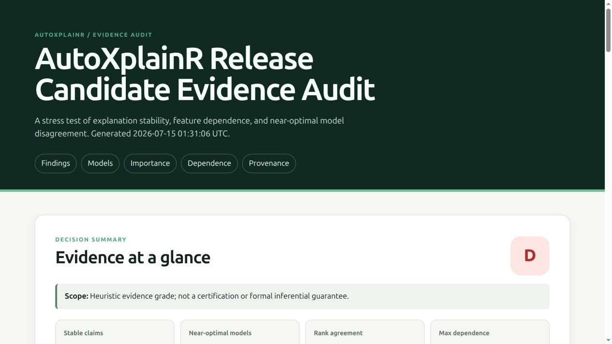

Stress-test the evidence behind model explanations.
Most explainability tools calculate an importance ranking or effect curve. AutoXplainR asks the next question: is the resulting claim stable, supported by the data, and consistent across similarly performing models?
The package wraps fitted tabular models behind one prediction contract, then combines repeated permutation importance, Monte Carlo stability, feature dependence, accumulated local effects (ALE), predictive multiplicity, and near-optimal-model explanation disagreement in one auditable report.
AutoXplainR is diagnostic software. Its grades are transparent heuristics, not causal evidence, statistical certification, fairness validation, safety approval, or regulatory compliance.

Why this package exists
A polished feature-importance chart can conceal several different problems:
- the ranking changes when the permutation is repeated;
- correlated predictors make marginal permutations or PDP combinations implausible;
- several models perform about equally well but rely on different features;
- an interval across random permutations is mistaken for population inference;
- a generated narrative overstates what the numerical analysis established.
AutoXplainR makes those failure modes first-class outputs. Its distinctive unit of work is not a plot—it is an explanation evidence audit with findings, permitted-claim labels, configuration, and provenance.
Installation
AutoXplainR is under active development and is not yet on CRAN.
# install.packages("pak")
pak::pak("Matt17BR/autoXplainR")The model-agnostic core has a lightweight runtime dependency set. H2O AutoML, Plotly charts, and remote Gemini narratives are optional integrations.
Quick start
Use genuinely held-out data for explanations whenever possible.
library(AutoXplainR)
train <- mtcars[1:24, ]
test <- mtcars[25:32, ]
model_a <- lm(mpg ~ wt + hp + disp, data = train)
model_b <- lm(mpg ~ wt + hp + qsec, data = train)
explainer_a <- explain_model(
model_a,
test,
y = "mpg",
label = "weight + power + displacement",
metadata = list(evaluation_role = "test")
)
explainer_b <- explain_model(
model_b,
test,
y = "mpg",
label = "weight + power + acceleration",
metadata = list(evaluation_role = "test")
)
audit <- audit_explanations(
list(explainer_a, explainer_b),
n_repeats = 30,
performance_tolerance = 0.05,
seed = 2026
)
audit
render_explanation_report(audit, "explanation-evidence.html")The audit contains:
- baseline held-out performance and the supplied near-optimal model set;
- repeat-level permutation scores, Monte Carlo intervals, and sign stability;
- pairwise feature-dependence warnings;
- importance ranges and rank agreement across near-optimal models;
- prediction agreement or ambiguity diagnostics;
- prioritized findings with a concrete next action;
- package version, configuration, seed, model labels, and explainer IDs.
Feature effects: ALE first
ALE is the default effect estimator because marginal PDPs can extrapolate over unrealistic combinations when predictors are dependent.
ale <- explain_effect(explainer_a, feature = "wt")
pdp <- explain_effect(explainer_a, feature = "wt", method = "pdp")
ale
attr(pdp, "dependence_warning")PDP remains available for compatibility and returns relative support plus a dependence warning. The plotted intervals are descriptive computation-level diagnostics, not population confidence intervals.
Model-agnostic prediction contract
For unsupported model classes, provide a function with signature function(model, newdata) or function(newdata):
explainer <- explain_model(
model = fitted_object,
data = held_out_data,
y = "outcome",
task = "binary",
positive = "yes",
predict_function = function(model, newdata) {
# Return P(outcome == "yes") as a numeric vector.
}
)Regression functions return a numeric vector. Binary classifiers return the positive-class probability. Multiclass classifiers return a named probability matrix with one column per outcome class. AutoXplainR validates this contract before starting an audit.
Optional H2O AutoML
autoxplain() is now an adapter, not the package architecture. It treats a numeric two-level outcome as classification, keeps held-out test data separate from H2O validation by default, applies the training preprocessing recipe to evaluation data, and records the full fitting contract.
# install.packages("h2o")
result <- autoxplain(
training_data,
target_column = "outcome",
test_data = test_data,
max_models = 10,
max_runtime_secs = 300,
seed = 2026
)
explainers <- as_explainers(result)
audit <- audit_explanations(explainers)
generate_dashboard(result, "automl-evidence.html")Potentially destructive preprocessing such as identifier removal or guessed ordinal conversion is opt-in. Every applied transformation is returned as a reusable recipe.
Optional narrative generation
The local deterministic narrative is complete without a network call. A remote Gemini narrative is only attempted when use_remote = TRUE and an API key is available. Only aggregated diagnostics are sent—never raw rows, model objects, case-level predictions, or the key itself.
local_memo <- generate_natural_language_report(audit, use_remote = FALSE)
# Explicit remote opt-in:
Sys.setenv(GEMINI_API_KEY = "...")
remote_memo <- generate_natural_language_report(audit, use_remote = TRUE)The prompt forbids causal, fairness, safety, and compliance claims and requires limitations to precede rankings. The numerical audit remains authoritative.
Where AutoXplainR fits
The R explainability ecosystem already has excellent tools. AutoXplainR does not claim to replace them.
| Need | Strong existing options | AutoXplainR focus |
|---|---|---|
| Broad explanation methods and adapters | DALEX, ingredients, iml | consumes any model through a small prediction contract |
| Formal feature-importance inference | xplainfi | clearly labels its default intervals as Monte Carlo diagnostics and points formal claims elsewhere |
| Interactive exploration | modelStudio | produces an evidence-first, dependency-free review artifact |
| AutoML training | H2O | treats AutoML as one optional source of a candidate model set |
| Explanation reliability | methods are spread across workflows | integrates stability, dependence, model multiplicity, claim grading, and provenance |
The product thesis is deliberately narrow: calculate explanations elsewhere if desired; use AutoXplainR to decide what you are justified in saying.
Statistical interpretation
- Permutation importance estimates fitted-model reliance on the chosen evaluation distribution. Correlated predictors can share or mask reliance.
- The default repeat interval captures random-permutation variation. Repeating a permutation does not create independent observations from a population.
- The “near-optimal set” contains only models supplied to the audit and is an empirical approximation, not an enumeration of a full Rashomon set.
- ALE summarizes local prediction differences within observed feature bins. It is safer than PDP under dependence, but it is still associational.
- Negative importance values are retained. They can reflect noise, finite data, model misspecification, or a genuinely harmful predictor.
For population inference or conditional feature importance, pair this package with a method designed for that estimand (for example, xplainfi) and record the result in the audit metadata.
Package architecture
fitted models
└─ explain_model() validated prediction contract + provenance
├─ calculate_permutation_importance()
├─ explain_effect() ALE or diagnosed PDP
└─ audit_explanations()
├─ stability and dependence
├─ near-optimal model disagreement
├─ prioritized findings and permitted claims
└─ render_explanation_report()External systems sit at the edge: H2O for optional fitting, Plotly for optional interactive views, and Gemini for an optional secondary narrative. The audit and HTML evidence report do not require any of them.
Development
devtools::document()
devtools::test()
devtools::check()Slow H2O integration tests are opt-in locally:
See CONTRIBUTING.md, SECURITY.md, and the development roadmap. API changes are recorded in NEWS.md.
Literature foundations
- Fisher, Rudin, and Dominici (2019), All Models are Wrong, but Many are Useful, JMLR 20(177).
- Apley and Zhu (2020), Visualizing the Effects of Predictor Variables in Black Box Supervised Learning Models, JRSS B 82(4).
- Molnar et al. (2018), iml: An R package for Interpretable Machine Learning, JOSS 3(26).
- Biecek (2018), DALEX: Explainers for Complex Predictive Models in R, JMLR 19(84).
License
MIT © 2025–2026 Matteo Mazzarelli.